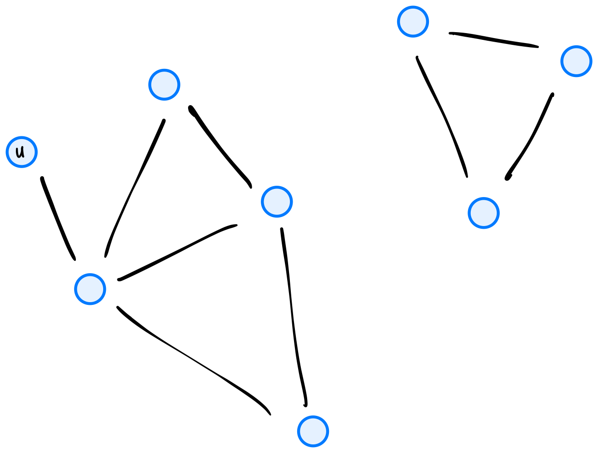
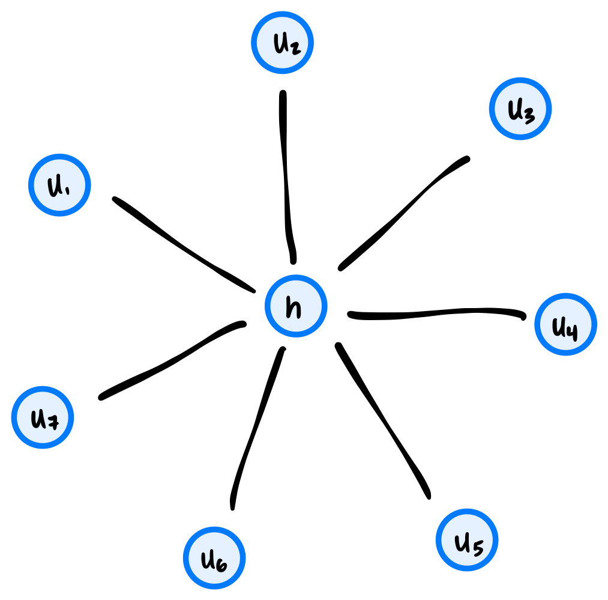

Tags: aggregate analysis, breadth first search
Consider the code below, which is a modification of the code for bfs given in lecture:
from collections import deque
def modified_full_bfs(graph):
status = {node: 'undiscovered' for node in graph.nodes}
for node in graph.nodes:
if status[node] == 'undiscovered':
modified_bfs(graph, node, status)
def modified_bfs(graph, source, status=None):
"""Start a BFS at `source`."""
if status is None:
status = {node: 'undiscovered' for node in graph.nodes}
status[source] = 'pending'
pending = deque([source])
# while there are still pending nodes
while pending:
u = pending.popleft()
for v in graph.neighbors(u):
# explore edge (u,v)
if status[v] == 'undiscovered':
status[v] = 'pending'
# append to right
pending.append(v)
for z in graph.nodes: # <----- new line!
print(z, status[z]) # <----- new line!
status[u] = 'visited'
Notice the two new lines; these lines print all node statuses any time that an undiscovered node has been found.
What is the time complexity of this modified modified_full_bfs? State your answer in asymptotic notation in terms of the number of nodes, \(|V|\), and the number of edges, \(|E|\). You may assume that the graph is represented using an adjacency list, and that it is connected.
\(\Theta(V^2)\).
First, the newly-added code (the for z in graph.nodes loop), takes \(\Theta(V)\) time each time the loop is encountered. The crux is: how many times is that loop encountered?
This loop is encountered every time we add a node to the queue (except for the root node, which we add to the queue right at the beginning of BFS). Since this is a connected graph, each node will get added to the pending queue exactly once, meaning that this new code is encountered exactly\(V-1\) times (the \(-1\) is subtracting the root node; the loop isn't encountered when we change it to pending).
Since the new code takes \(\Theta(V)\) time each time it's encountered, and since it's encountered \(\Theta(V)\) times, the total time complexity of the loop is \(\Theta(V^2)\).
You might wonder why the time complexity isn't \(\Theta(VE)\), since the new code is within the loop that ``explores'' each edge in the graph, and we know that it makes a total of \(2|E|\) iterations when the graph is undirected. This is true, but recognize that the new code only executes when the if-statement before it is True, and this will happen on only a subset of the \(2|E|\) iterations. In fact, it will happen exactly \(|V|-1\) times, as we argued above.
Tags: depth first search, aggregate analysis
Suppose an undirected graph \(G = (V, E)\) is a tree with 33 edges. Suppose a node \(s\) is used as the source of a depth-first search.
Including the root call of dfs on node \(s\), how many calls to dfs will be made?
34
Tags: aggregate analysis, graph representations
Suppose a graph \(G = (V, E)\) is stored using an adjacency list representation in the variable adj_list. What is the time complexity of the below code?
for lst in adj_list:
for u in lst:
print(u)
\(\Theta(V + E)\)
Tags: depth first search, aggregate analysis
Consider the code shown below. It shows DFS as seen in lecture, with one modification: a print statement in the for-loop.
def dfs(graph, u, status=None):
"""Start a DFS at `u`."""
# initialize status if it was not passed
if status is None:
status = {node: 'undiscovered' for node in graph.nodes}
status[u] = 'pending'
for v in graph.neighbors(u):
print("Hello!")
if status[v] == 'undiscovered':
dfs(graph, v, status)
status[u] = 'visited'
How many times will "Hello!" be printed if dfs is run on the graph below using node \(u\) as the source? Note that dfs will not be restarted if the first call does not explore the whole graph.

12
Tags: aggregate analysis
A ``hub and spoke'' graph with \(n\) nodes consists of a single ``hub'' node \(h\) along with \(n - 1\) ``spoke'' nodes, \(u_1, \ldots, u_{n-1}\) and \(n - 1\) edges from the hub node \(h\) to each of the spoke nodes. For example, a ``hub and spoke'' graph with 8 nodes looks like the below:

What is the worst case time complexity of an optimal algorithm which takes as input an arbitrary graph \(G = (V, E)\) and determines if it is a ``hub and spoke'' graph? You may assume that the graph is represented as an adjacency list and that the total number of edges in the graph can be retrieved in constant time.
\(\Theta(1)\) Here's the algorithm. First, check that the number of edges is \(|V| - 1\). If not, it's not a ``hub and spoke'' graph. This takes constant time, by the assumption that the total number of edges can be retrieved in constant time.
Next, take an arbitrary node and compute its degree (in \(\Theta(1)\) time), since the graph is represented as an adjacency list). If the degree is \(n - 1\), then the graph is a ``hub and spoke'' graph, and this is the hub.
If the degree is not \(n - 1\), but instead 1, this node might be a spoke. Check the degree of its neighbor as described above to see if its a hub.
If you see a degree that's neither 1 nor \(n - 1\), then the graph is not a ``hub and spoke'' graph.
Tags: aggregate analysis
Suppose the code below is run on a graph \(G = (V, E)\). What is its time complexity? You may assume that \(|E| \geq 1\).
for u in graph.nodes:
for v in graph.neighbors(u):
print(u, v)
\(\Theta(V + E)\)
Tags: aggregate analysis
Suppose a graph \(G = (V, E)\) is stored using an adjacency list representation in the variable adj_list. What is the time complexity of the below code?
for u, lst in enumerate(adj_list):
for v in lst:
print(u, v, "is an edge")
2nd option: \(\Theta(V + E)\)